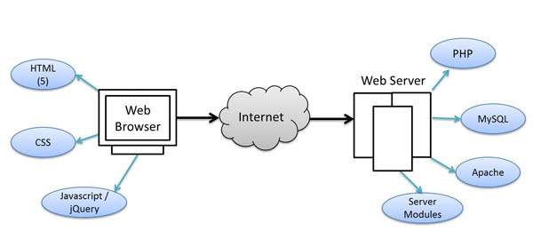
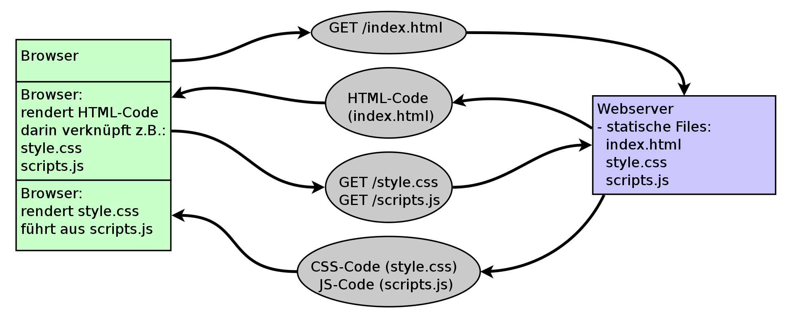
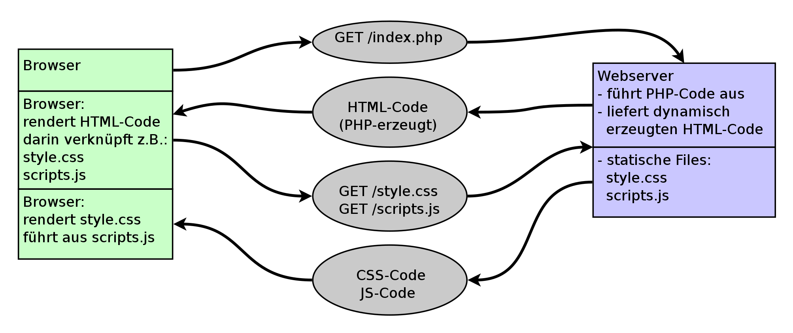
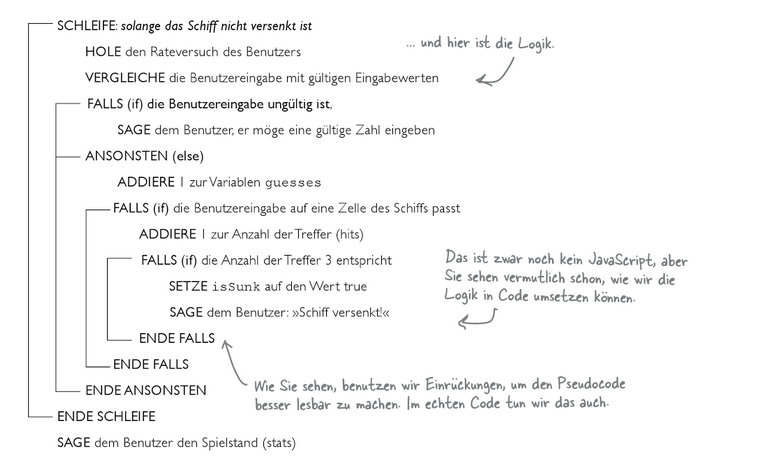

"Ein Interpreter ist ein Computerprogramm, das einen Programm-Quellcode im Gegensatz zu Assemblern oder Compilern nicht in eine auf dem System direkt ausführbare Datei übersetzt, sondern den Quellcode einliest, analysiert und ausführt. Die Analyse des Quellcodes erfolgt also zur Laufzeit des Programmes." (Wikipedia)
In der Webprogrammierung sind Skriptsprachen (Programmcode der während der Laufzeit durch einen Interpreter ausgeführt wird [siehe 3. Folie]) sehr verbreitet. Sowohl server- als auch clientseitig.
Serverseitige Skriptsprachen sind bspw.: PHP, Perl, Python, etc. aber auch Javascript kann serverseitig eingesetzt werden (node.js).
Die klassische clientseitige Skriptsprache im WWW ist JavaScript (ECMAScript).
"Die weltweit erste Webseite info.cern.ch wurde am 6. August 1991 veröffentlicht." - Wikipedia - Word Wide Web; Nachbildung dieser Seite: http://info.cern.ch/hypertext/WWW/TheProject.html
Während das Übertragungsprotokoll (HTTP) bis heute prinzipiell auf die selbe Weise funktioniert, sind die Entwicklungen der Technologien von Server und Client (Browser) rasant vorangeschritten.
Man spricht hier häufig in diesem Kontext auch von "Frontend" und "Backend".
Da wir mit PHP serverseitig arbeiten, brauchen wir für die Entwicklung einen Webserver und einen PHP-Interpreter (verbreitet: LAMP-Architektur oder Abwandlungen) - unser Programmcode wird auf dem Webserver durch das PHP-Modul interpretiert. Jede serverseitige Skriptsprache wird durch einen Interpreter am Webserver interpretiert - der Browser "sieht" in diesem Fall nur die Ausgabe des PHP-Skripts (bspw. eine HTML-Datei), aber nicht den Programmcode selbst.
Zum Vergleich: bei clientseitigen Sprachen, wie etwa JavaScript ist unser Interpreter im Browser selbst integriert - der Programmcode ist für den Client (meist Browser) sichtbar.
Hier macht der Webserver nichts anderes, als statische Files liefern: HTML/CSS/JS-Interpretation übernimmt schließlich der Browser. Daher kann man rein statische Seiten auch ohne Webserver lokal ausführen.
Hier übernimmt der Webserver weitere Aufgaben: er liefert nicht nur statisches HTML, CSS und JS, sondern erzeugt dynamisch einen Code. Bspw. durch PHP: eine serverseitige Skriptsprache, die Code (HTML, XML, Mediendateien) dynamisch erzeugt.
Übung: WAMP installieren; Hello-World-PHP-Skript erstellen
Es gibt eine Reihe von Programmierparadigmen, die oft voneinander auch gar nicht abgrenzbar sind. PHP unterstützt verschiedenste Paradigmen - seit Version 5 wurde der Fokus auf die Möglichkeiten der objektorientierten Programmierung deutlich gestärkt. Zum Einstieg werden wir jedoch den klassischen Ansatz wählen: die prozedurale Programmierung, die weniger abstrakt ist.
Wir beschreiben nur eine Art zu Programmieren, das heißt eine Art von Problemlösungsverfahren.
Es bedeutet: Zerlegung eines Programms in Teilprogramme, Prozeduren (also etwa Funktionen). Das Gesamtproblem zerlegen wir in Teilprobleme und erstellen jeweils Lösungen.
Zur grafischen Darstellung von Programmabläufen gibt es unterschiedliche Varianten:
if (bedingung1) {
if (bedingung2) {
// Anweisungsblock 1
}
else {
// Anweisungsblock 2
}
}
else {
// Anweisungsblock 3
}
while (a > 0 && b > 0) {
if (a > b) {
a = a - b;
}
else {
b = b - a;
}
}
if (b == 0) {
// Ausgabe a
}
else {
// Ausgabe b
}
Hier sind einfache Programmabläufe grafisch dargestellt; geht es nicht um die Darstellung, wird in der Praxis aber häuftig so genanner kommentierter "Pseudocode" stattdessen verwendet, der während der Programmierung schon als Platzhalter positioniert werden kann.
